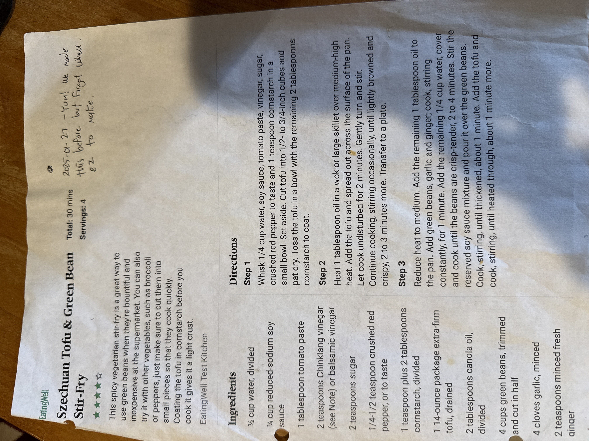

Szechuan Tofu & Green Bean Stir-Fry

A spicy vegetarian stir-fry built around green beans when they're bountiful and cheap — broccoli or peppers work too, just cut them small so they cook quickly. Coating the tofu in cornstarch before searing gives it a light, crisp crust. Noted on the card, 1/27/2025: "Yum! We made this before but forgot how easy to make."
4servings
30 mintotal time
Vegandiet
Ingredients
- ½ cup water, divided
- ¼ cup reduced-sodium soy sauce
- 1 tbsp tomato paste
- 2 tsp Chinkiang vinegar (or balsamic vinegar)
- 2 tsp sugar
- ¼–½ tsp crushed red pepper, or to taste
- 1 tsp plus 2 tbsp cornstarch, divided
- 1 (14-ounce) package extra-firm tofu, drained
- 2 tbsp canola oil, divided
- 4 cups green beans, trimmed and cut in half
- 4 cloves garlic, minced
- 2 tsp minced fresh ginger
Method
- Make the sauce and coat the tofu. Whisk ¼ cup water, soy sauce, tomato paste, vinegar, sugar, crushed red pepper, and 1 teaspoon cornstarch in a small bowl; set aside. Cut tofu into ½–¾-inch cubes and pat dry. Toss the tofu in a bowl with the remaining 2 tablespoons cornstarch to coat.
- Sear the tofu. Heat 1 tablespoon oil in a wok or large skillet over medium-high heat. Add the tofu, spread out across the pan, and let cook undisturbed for 2 minutes. Gently turn and stir, then continue cooking, stirring occasionally, until lightly browned and crispy, 2–3 minutes more. Transfer to a plate.
- Cook the green beans. Reduce heat to medium. Add the remaining 1 tablespoon oil to the pan. Add green beans, garlic, and ginger; cook, stirring constantly, for 1 minute. Add the remaining ¼ cup water, cover, and cook until the beans are crisp-tender, 2–4 minutes.
- Sauce and finish. Stir the reserved soy sauce mixture and pour it over the green beans. Cook, stirring, until thickened, about 1 minute. Add the tofu and cook, stirring, until heated through, about 1 minute more.
From the card, 1/27/2025: "Yum! We made this before but forgot how easy to make."
Rated 4 out of 5 stars on the printed card.